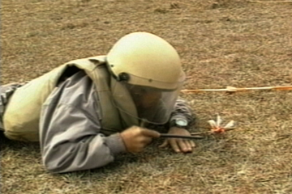

Crater
Laos' scarred landscape is saturated with moon-like craters. Aerial views as shown here are extremely rare.


Explosive Remedy
At times, large munitions are discovered. Explosives are then used to detonate the bomb.

Warning a Village
Often, UXOs are detected in highly visible and populated areas. In these cases, local residents must be evacuated.